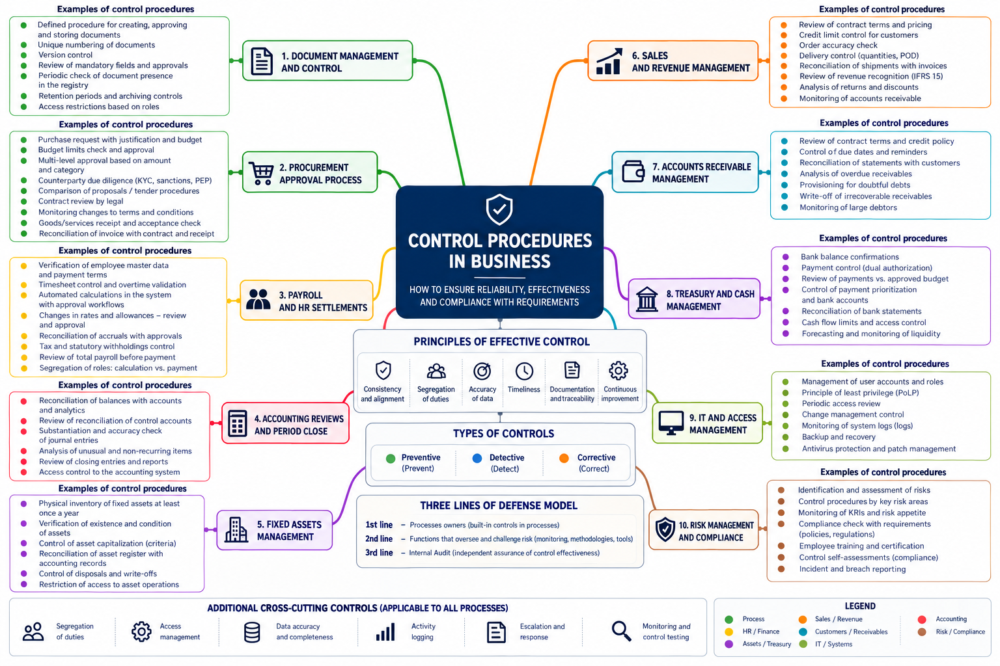
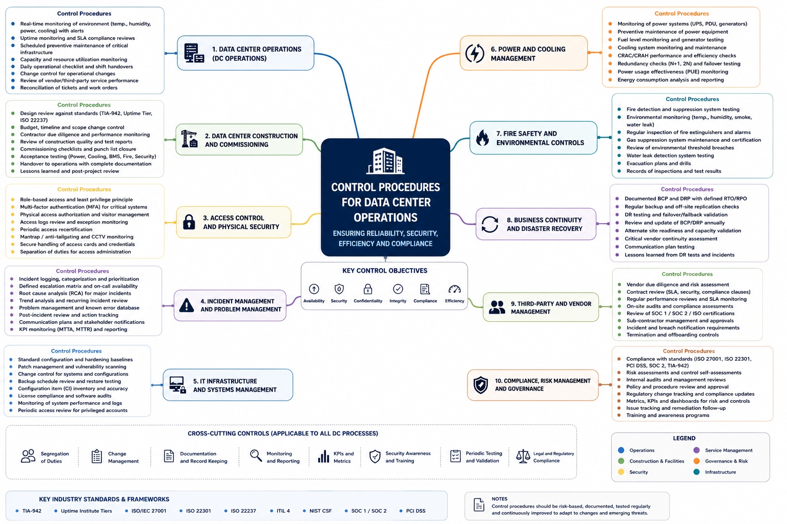

A risk register tells us what could go wrong. A well-designed control tells us what someone or something must do about it, when, how exceptions are handled, and how to prove it happened.
This is the distinction I find most important in risk and internal control work. Risks become manageable when they are connected to day-to-day processes rather than treated as a separate reporting exercise.
01. Start with the business process
Almost every business process has a control dimension: procurement needs approval and supplier verification; finance needs reconciliations and reliable period-close procedures; sales needs pricing and billing checks; IT needs access and change management. A control system makes those expectations consistent, repeatable and testable.

Operational risk is not necessarily technical: it can arise from poorly designed hand-offs, unclear responsibilities, incomplete records, inadequate approval limits or inconsistent execution. Financial consequences may include misstatements, leakage of revenue or unnecessary costs; nonfinancial consequences may include outages, service failures, contractual disputes or regulatory exposure.
The principle of ownership is critical. Business teams execute first-line controls; risk and compliance functions provide frameworks, challenge and monitoring; internal audit offers independent assurance. McKinsey's discussion of operational risk management similarly emphasises consistent risk taxonomies, clearly defined ownership and connecting risk and control assessments to management decisions.Source ↗
02. A data centre adds a tightly coupled technical environment
A data centre is both a business and a critical technology operation. Commercial decisions and financial records are connected to physical infrastructure: electrical capacity, UPS, generators, cooling, networking, hardware, security systems and specialist vendors.
A failure in one area can propagate through others. An unapproved infrastructure change may affect availability; insufficient maintenance or poor monitoring may extend an incident; weak contract or capacity controls may create a mismatch between commitments and resources. That makes well-defined ownership, preventive checks, monitoring, incident escalation and recovery testing especially important.

What frameworks apply?
There is no single standard that governs every data-centre control. The applicable obligations depend on the facility, jurisdiction, contracts, certifications and scope of services. Useful reference frameworks include:
These frameworks provide different lenses: risk governance, information security, continuity, service management and physical infrastructure resilience. They should not be described as universally mandatory or as proof that a particular site holds a certification.
03. Writing a control is harder than writing a policy
A vague requirement such as “the finance team reviews billing” is not a testable control. It leaves too many questions unanswered: Who performs the review? When? What is compared? What counts as a mismatch? Who corrects it? What record remains?
I use the following practical structure to explain what a complete control description needs.
This structure is also what allows a reviewer to distinguish control design from operating effectiveness. The first asks whether the prescribed procedure could mitigate the relevant risk; the second asks whether it was actually performed as designed.
04. What this looked like in practice
At Rostelecom (Data Centres), my work included developing an enterprise-wide risk and internal control framework spanning approximately 90 risks and 250 controls, delivering 10+ risk-based process reviews, working with process owners and tracking corrective actions.
I looked for gaps between documented procedures and real transactions. For example, revenue assurance reviews identified discounts outside approved limits and unauthorised long-term capacity reservations. Contract-cost analysis identified pricing differences requiring further review. These matters were not simply register entries: they required evidence, discussions with responsible teams and practical follow-up.
The aim was to make risks understandable to managers and translate review findings into specific control improvements.
05. The Risk–Control Matrix turns controls into a management system
A Risk–Control Matrix (RCM) connects a risk to the activities intended to mitigate it and to the evidence that those activities occurred. A useful register captures the risk, control objective, exact execution steps, frequency, owner, system dependence, control type, evidence, testing results and any remediation.
The following example illustrates a complete control procedure: its objective, accountable roles, timing, verification steps, exception handling and supporting evidence.
Monthly reconciliation of billing data to the financial ledger
Risk: billing data may be omitted, duplicated or inaccurately reflected in accounting records.
- Who
- Revenue Accountant; review overseen by the Revenue Accounting Manager.
- When
- Monthly, after the billing interface run and before the reporting period is closed.
- What
- Compare billing exports and ERP revenue records by service category and reporting period; investigate unmatched or unusual items.
- If the check passes
- Record a nil-exception reconciliation, retain source reports and obtain reviewer confirmation.
- If it fails
- Consult the billing process owner, initiate an authorised correction, repeat the comparison and document any outstanding difference or escalation.
- Result
- A reviewed billing-to-ledger reconciliation with a documented disposition of exceptions.
- Control trace
- Dated billing export, ERP report, reconciliation worksheet, exception correspondence and sign-off.
Six control examples across business processes
| ID | Process | Illustrative control | Type | Key evidence |
|---|---|---|---|---|
| EX-CP-001 | Procurement | Reconcile the approved plan with transaction records | Detective | Updated approved plan and change log |
| EX-CP-002 | Third-party risk | Monitor active suppliers for material adverse events | Detective | Screening results and escalation log |
| EX-CP-003 | Treasury | Reconcile bank movements and balances to the ledger | Detective | Bank statements and reviewed reconciliation |
| EX-CP-004 | Revenue | Reconcile billing data with financial records | Detective | Billing extract and reviewer sign-off |
| EX-CP-005 | Inventory | Reconcile warehouse and accounting records | Detective | Variance report and approved corrections |
| EX-CP-006 | Financial close | Prevent unauthorised posting to closed periods | Preventive | ERP configuration, log and exception approval |
Six detailed control procedures across 27 fields, including execution steps, responsibilities, evidence, assessments and follow-up.
06. The point is not to have more controls. It is to have better ones.
Good controls have a clear purpose, are proportionate to the risk, fit naturally into operations and leave enough evidence to be assessed. In a data centre, that means viewing operational and technology risks together with financial and commercial controls — without losing clear accountability for each process.
For me, the RCM is not a compliance spreadsheet in isolation. It is the link between risk ownership, daily work, management oversight and assurance.